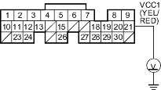
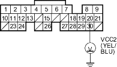

- Check for continuity between ECM/PCM connector terminal A21 and body ground.

Is there continuity?
YES |
- Repair short in the wire between the ECM/PCM (A21) and the MAP sensor. |
NO |
- Substitute a known-good ECM/PCM and recheck (see page 11-6). If symptom/indication goes away, replace the original ECM/PCM. |

- Measure voltage between body ground and ECM/PCM connector terminal A20.

Is there about 5 V?
YES |
- Substitute a known-good ECM/PCM and recheck (see page 11-6). If symptom/indication goes away, replace the original ECM/PCM. |
NO |
- Go to step 64. |
- Turn the ignition switch OFF.
- Disconnect the 3P connector from each of these sensors, one at a time, and measure voltage between body ground and ECM/PCM connector terminal A20 with the ignition switch ON (II).
- Exhaust gas recirculation (EGR) valve position sensor
- Knock sensor
- Throttle position (TP) sensor

Is there about 5 V?
YES |
- Replace the sensor that restored about 5 V when disconnected. |
NO |
- Go to step 66. |
- Turn the ignition switch OFF.
- Disconnect the 3P connectors from the following sensors.
- Exhaust gas recirculation (EGR) valve position sensor
- Knock sensor
- Throttle position (TP) sensor
- Disconnect ECM/PCM connector A (31P).